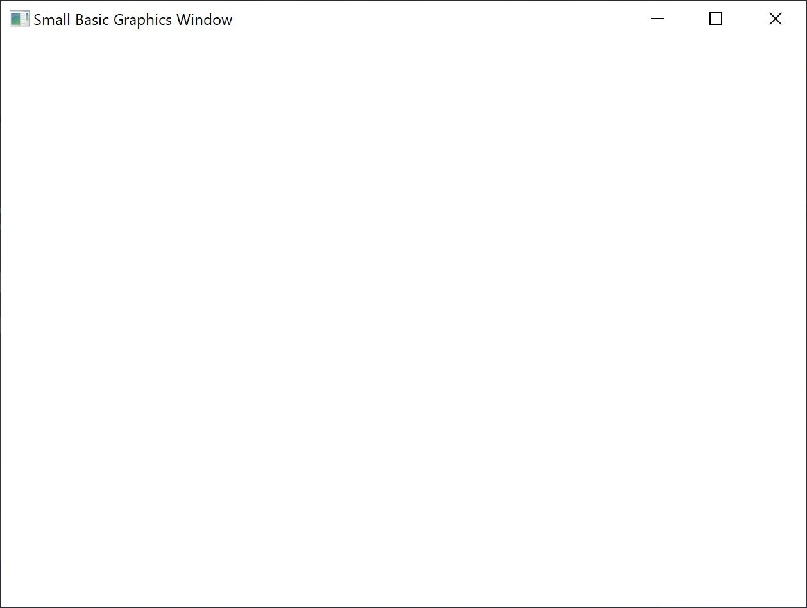
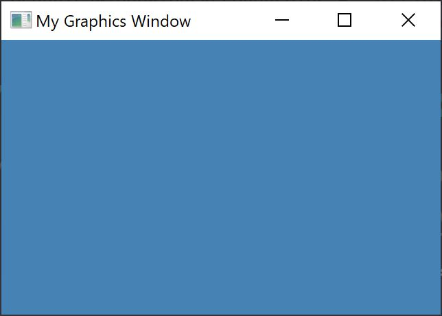
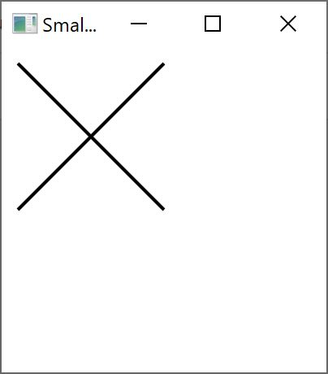
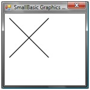
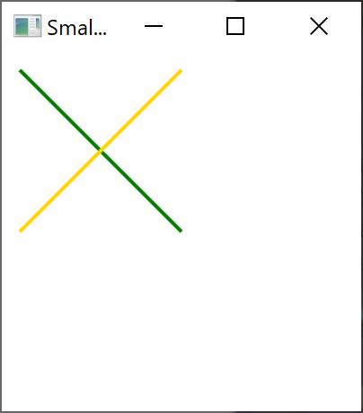
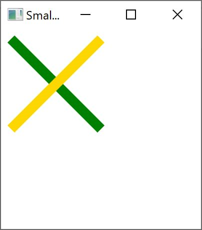
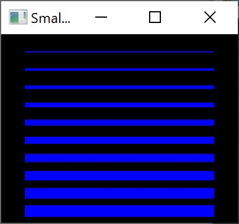
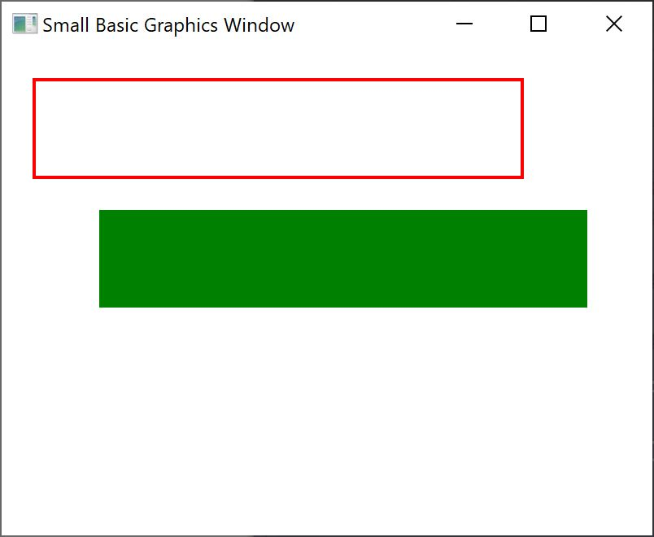
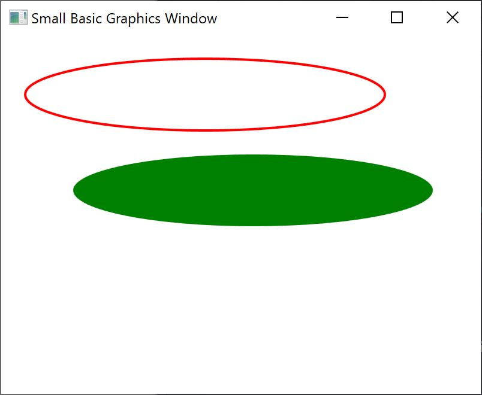
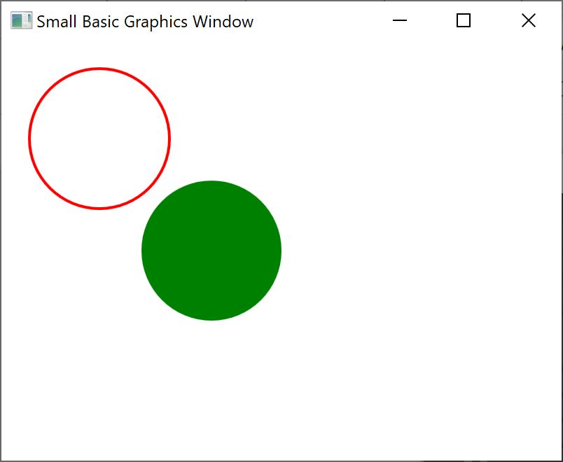

So far in all our examples, we’ve used the TextWindow to explain the fundamentals of the Small Basic language. However, Small Basic comes with a powerful set of Graphics capabilities that we’ll start exploring in this chapter.
Just like we had TextWindow that allowed us to work with Text and Numbers, Small Basic also provides a GraphicsWindow that we can use to draw things. Let’s begin by displaying the GraphicsWindow.
GraphicsWindow.Show()When you run this program, you’ll notice that instead of the usual black text window, you get a white Window like the one shown below. There’s nothing much to do on this window yet. But this will be the base window on which we’ll work on in this chapter. You can close this window by clicking on the ‘X’ button on the top right corner.

Figure 6.1 - An empty Graphics Window
The graphics window allows you to customize its appearance to your desire. You can change the title, the background and its size. Let’s go ahead and modify it a bit, just to get familiar with the window.
GraphicsWindow.BackgroundColor = "SteelBlue"
GraphicsWindow.Title = "My Graphics Window"
GraphicsWindow.Width = 320
GraphicsWindow.Height = 200
GraphicsWindow.Show()
Here’s how the customized graphics window looks. You can change the background color to one of the many values listed in Appendix B. Play with these properties to see how you can modify the window’s appearance.

Figure 6.2 - A Custom Graphics Window
Once we have the GraphicsWindow up, we can draw shapes, text and even pictures on it. Let’s start by drawing some simple shapes. Here’s a program that draws a couple lines on the Graphics Window.
GraphicsWindow.Width = 200
GraphicsWindow.Height = 200
GraphicsWindow.DrawLine(10, 10, 100, 100)
GraphicsWindow.DrawLine(10, 100, 100, 10)

Figure 6.3 - CrissCross
The first two lines of the program setup the window and the next two lines draw the crisscross lines. The first two numbers that follow DrawLine specify the starting x and y co-ordinates and the other two specify the ending x and y co-ordinates. The interesting thing with computer graphics is that the co-ordinates (0, 0) start at the top left corner of the window. In effect, in the co-ordinate space the window is considered to be on the 2nd quadrant.
Note: Instead of using names for colors you can use the web color notation (#RRGGBB). For example, #FF0000 denotes Red, #FFFF00 for Yellow, and so on. We’ll learn more about colors in Colors

Figure 6.4 - The co-ordinate map
If we go back to the line program, it’s interesting to note that Small Basic allows you to modify the properties of the line, such as the color and its thickness. First, let’s modify the color of the lines as shown in the program below.
GraphicsWindow.Width = 200
GraphicsWindow.Height = 200
GraphicsWindow.PenColor = "Green"
GraphicsWindow.DrawLine(10, 10, 100, 100)
GraphicsWindow.PenColor = "Gold"
GraphicsWindow.DrawLine(10, 100, 100, 10)

Figure 6.5 - Changing Line Color
Now, let’s modify the size too. In the program below, we change the line width to be 10, instead of the default which is 1.
GraphicsWindow.Width = 200
GraphicsWindow.Height = 200
GraphicsWindow.PenWidth = 10
GraphicsWindow.PenColor = "Green"
GraphicsWindow.DrawLine(10, 10, 100, 100)
GraphicsWindow.PenColor = "Gold"
GraphicsWindow.DrawLine(10, 100, 100, 10)

Figure 6.6 - Thick Colorful Lines
PenWidth and PenColor modify the pen with which these lines are drawn. They not only affect lines but also any shape that is drawn after the properties are updated.
By using the looping statements we learned in the previous chapters, we can easily write a program that draws multiple lines with increasing pen thickness.
GraphicsWindow.BackgroundColor = "Black"
GraphicsWindow.Width = 200
GraphicsWindow.Height = 160
GraphicsWindow.PenColor = "Blue"
For i = 1 To 10
GraphicsWindow.PenWidth = i
GraphicsWindow.DrawLine(20, i * 15, 180, i * 15)
endfor

Figure 6.7 - Multiple Pen Widths
The interesting part of this program is the loop, where we increase the PenWidth every time the loop is run and then draw a new line under the old one.
When it comes to drawing shapes, there are usually two types of operations for every shape. They are Draw operations and Fill operations. Draw operations draw the outline of the shape using a pen, and Fill operations paint the shape using a brush. For example in the program below, there are two rectangles, one that is drawn using the Red pen and one that’s filled using the Green Brush.
GraphicsWindow.Width = 400
GraphicsWindow.Height = 300
GraphicsWindow.PenColor = "Red"
GraphicsWindow.DrawRectangle(20, 20, 300, 60)
GraphicsWindow.BrushColor = "Green"
GraphicsWindow.FillRectangle(60, 100, 300, 60)

Figure 6.8 - Drawing and Filling
To draw or fill a rectangle, you need four numbers. The first two numbers represent the X and Y co-ordinates for the top left corner of the rectangle. The third number specifies the width of the rectangle while the fourth specifies its height. In fact, the same applies for drawing and filling ellipses, as shown in the program below.
GraphicsWindow.Width = 400
GraphicsWindow.Height = 300
GraphicsWindow.PenColor = "Red"
GraphicsWindow.DrawEllipse(20, 20, 300, 60)
GraphicsWindow.BrushColor = "Green"
GraphicsWindow.FillEllipse(60, 100, 300, 60)

Figure 6.9 - Drawing and Filling Ellipses
Ellipses are just a general case of circles. If you want to draw circles, you would have to specify the same width and height.
GraphicsWindow.Width = 400
GraphicsWindow.Height = 300
GraphicsWindow.PenColor = "Red"
GraphicsWindow.DrawEllipse(20, 20, 100, 100)
GraphicsWindow.BrushColor = "Green"
GraphicsWindow.FillEllipse(100, 100, 100, 100)

Figure 6.10 - Circles